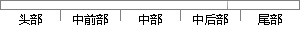

5和CART（Classification and Regression Tree）。
片段位置图

相似结果|
1
原句片段：5和CART（Classification and Regression Tree）。
相似片段 1：树回归CART(Classification And Regression Tree)(1) 前面我们介绍了线性回归和加权...2017年11月 (5) 2017年10月 (19) 2017年9月 (2) 2017年6月 (3)...
相似片段 2：模式识别重要算法CART(Classification And Regression Tree)算法实现及说明文档 下载...5 6 ?? ... 9猜你喜欢 板块导航 网络生活 育儿交流 健康生活 有...
相似片段 3：由多棵CART(Classification And Regression Tree)构成...(5)重复(2),(3),(4)直到所有CART都被训练过。...
相似片段 4：CART分类与回归树的原理与实现 CART(Classification And Regression Tree)算法采用一种二分递归分割的技术,将当前的样本集分为两个子样本集,使得生成的的每个非叶子...
相似片段 5：Classification and Regression Trees Ultimate Classification Tree: CART? software is the ultimate classifi...
相似片段 6：[Discriminant analysis with binary decision tree (CART: Classification and Regression Tree)].alendronatehormone replacement therapyosteoporosis...
相似片段 7：统计学术语:classification and regression tree,CART算法 是什么算法统计学术语:classification and regression tree,CART算法 是什么算法 ...
相似片段 8：(GAM),classification and regression tree(CART),were applied to the analysis...(C1),把1,2,3,5,7分成一类(C2),然后根据这些特征或另外一些特征把0,6,8...
相似片段 9：Classification and Regression Trees (CART) Variety of approaches used ? CART...tree 1 2 3 5 6 9 10 14 17 21 24 26 X-val Relative Error 0.2 ...
|
※ 片段修改建议 ※
近似词参考：